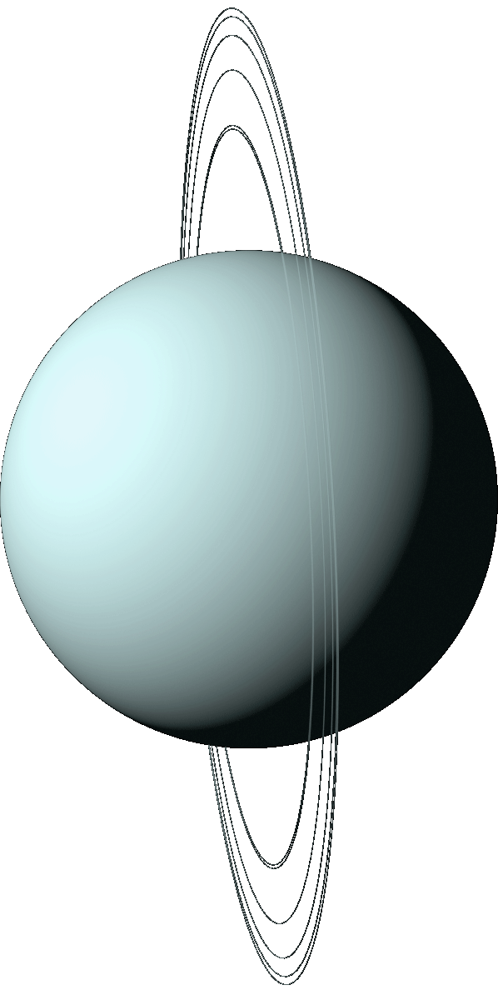
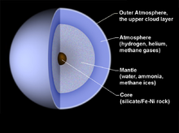
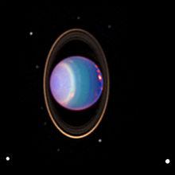
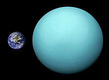

Уран
 Уран е седмата планета от Слънчевата система. Тя има третия по размер планетарен радиус и четвърта по големина планетарна маса в Слънчевата система. Въпреки че е видима с невъоръжено око, подобно на петте класически планети, Уран не е наблюдавана от древните астрономи заради мъжделивостта около планетата. Сър Уилям Хершел оповестява откритието на планетата на 13 март 1781 година, с което разширява границите на познатата Слънчева система за пръв път в модерната история. Това е първата открита планета с помощта на телескоп. Уран и Нептун имат сходна структура и химичен състав, които се различават от тези при големите газови гиганти Сатурн и Юпитер. Поради тази причина учените често ги поставят в различен клас, наречен „ледени гиганти“. Атмосферата на Уран е подобна на Юпитер и Сатурн в нейния първичен състав – основно водород и хелий, но съдържа повече вода, амоняк и метан както и следи от други въглеводороди. Това е най-студената планетарна атмосфера в Слънчевата система, с минимална температура от 49 К (-224 °С) и има сложна слоеста облачна структура, съдържаща основно вода в най-ниските облаци и метан в най-горния слой облаци. Вътрешността на Уран е съставена главно от лед и скала. Подобно на другите гигантски планети, Уран има пръстенна система, магнитосфера и многобройни луни. Системата има уникална конфигурация, защото нейната ос на въртене е наклонена настрани, почти в равнината на неговата слънчева орбита. Следователно северният и южният му полюс лежат там, където повечето други планети имат своя екватор. През 1986 г. изображенията от Voyager 2 показват Уран като почти безлична планета във видимата светлина, без облаците или бурите, свързани с другите гигантски планети. Наблюденията от Земята показват сезонна промяна и повишена метеорологична активност, когато Уран достигна равноденствието си през 2007 г. Скоростите на вятъра могат да достигнат 250 m/s (900 km/h).
Физични характеристики
Образуване
Съществуват много аргументи в полза на това, че разликите между ледените и газовите гиганти възникват още в началото на образуването на Слънчевата система. Смята се, че Слънчевата система е образувана от гигантски въртящ се облак, съставен от газ и прах и известен като Протослънчева мъглявина (или само Слънчева мъглявина). Облакът постепенно се уплътнява и образува слънчевия диск в центъра си. Във формирането на Слънцето взима участие по-голямата част от водорода и хелия в облака. Частиците прах започват да се събират заедно, за да образуват впоследствие протопланетите. При нарастването на планетите някои от тях формират достатъчно силно гравитационно поле и концентрират около себе си останалия газ. Те продължават да събират газ дотогава, докато не достигнат експоненциален предел. Ледените гиганти в същото време успяват да съберат значително по-малко газ – едва няколко пъти масата на Земята. По такъв начин, масата им не достига до този предел. При съвременните теории за образуването на Слънчевата система има някои трудности в обясненията при формирането на Уран и Нептун. Тези планети са достатъчно големи за разстоянията, на които се намират от Слънцето. Възможно е по-рано те да са били по-близо до него, а после да са променили орбитите си. От друга страна най-новите методи за планетарни симулации показват, че Уран и Нептун наистина може да са се образували на сегашното си място и по този начин реалните им размери в съответствие с тези математически модели не са пречка в теорията за произхода на Слънчевата система.
Състав и структура
 Масата на Уран е приблизително 14,5 пъти по-голяма от тази на Земята, което я прави най-малката от гигантските планети. Диаметърът му е малко по-голям от този на Нептун, приблизително четири пъти по-голям от този на Земята. Уран е втората най-плътна планета след Сатурн. Тази стойност показва, че е съставен предимно от различни ледове, като вода, амоняк и метан. Общата маса на леда във вътрешността на Уран не е точно известна, защото в зависимост от избрания модел се появяват различни фигури, но тя трябва да е между 9,3 и 13,5 земни маси. Водородът и хелият съставляват само малка част от общото количество (за разлика от Юпитер и Сатурн, които са изградени предимно от последните два елемента). Останалата част от не-ледената маса се дължи на скален материал. Счита се, че Уран няма локализирано скално ядро, подобно на Юпитер и Сатурн, а структурата му е по-скоро хомогенна. Синьозеленият цвят на планетата се дължи на метана в атмосферата ѝ, който поглъща червена светлина.
Стандартният модел на структурата на Уран е, че той се състои от три слоя: скалиста (силикат/желязо-никел) сърцевина в центъра, ледена мантия в средата и външна газова водородна/хелиева обвивка. Ядрото е относително малко, с маса само 0,55 земни маси и радиус по-малък от 20% от Уран. Мантията съставлява по-голямата част от нейната маса, с около 13,4 земни маси, а горната атмосфера е относително несъществена, тежаща около 0,5 земни маси и простираща се на 20% от радиуса на Уран. Всъщност ледената мантия не се състои от лед в конвенционалния смисъл, а от гореща и плътна течност, състояща се от вода, амоняк и други летливи вещества. Този флуид, който има висока електрическа проводимост, понякога се нарича водно-амонячен океан. Екстремното налягане и температура дълбоко в недрата на Уран, могат да разрушат метановите молекули, като отделилите се въглеродни атоми се кондензират в кристали от диамант, валящи през мантията като градушки. Експериментите с много високо налягане в Националната лаборатория на Лорънс Ливърмор предполагат, че основата на мантията може да съдържа океан от течен диамант, с плаващи твърди „диамантени берги“. Въпреки че разглежданият по-горе модел е стандартен, той не е уникален; други модели също отговарят на наблюденията. Например ако в ледената мантия се смесят значителни количества водород и скалист материал, общата маса на ледовете във вътрешността ще бъде по-ниска и съответно общата маса на скалите и водорода ще бъде по-висока. Наличните понастоящем данни не позволяват да се определи кой модел е правилен. Течната вътрешна структура на Уран означава, че тя няма твърда повърхност. Газообразната атмосфера постепенно преминава във вътрешните течни слоеве.
Орбита и наклон на оста

Една от най-характерните черти на Уран е наклонът на неговата ос на въртене от почти 90 градуса.
Вследствие на това в дадени части от нейната орбита един от полюсите е обърнат директно към Слънцето,
докато другият остава в постоянна сянка. През останалото време Слънцето изгрява и залязва нормално, а
денят там продължава 42 години.
По време на посещението на планетата от Вояджър 2 през 1986 година южният полюс на Уран беше насочен
почти право към Слънцето. Да се определи кой от полюсите на планетата е южен и кой северен е предмет на
известни спорове в научните среди. Уран може да бъде характеризиран или като имащ наклон на оста на
въртене малко по-малко от 90° и въртящ се ретроградно (обратно на часовниковата стрелка) или имащ наклон
на оста малко повече от 90° и въртящ се по посока на часовниковата стрелка. И двете определения са
еквивалентни и еднакво отговарящи на истината, но пораждат различни определения за северния и южния
полюс на Уран.
В резултат на необичайната спрямо другите планети ориентация, полюсите на планетата получават повече
слънчева енергия, отколкото биха получили при умерени наклони на оста на въртене. Независимо от това
температурата на екватора на Уран е по-висока от тази на полюсите, поради неизвестен механизъм за
преразпределение на топлината, била тя от вътрешността на планетата или от Слънцето.
Относно причината за големия наклон на оста на въртене се предполага, че тя е сблъсък с голяма по размери протопланета скоро след формирането на Уран. Още едно следствие от наклона на оста е ясно изразената сезонност на Уран. При посещението на Вояджър 2, когато Слънцето грееше върху полюса на планетата, облачните пояси в атмосферата бяха изключително тънки и бледи. При скорошни наблюдения от телескопа Хъбъл обаче бяха забелязани по-обширни и ясно изразени пояси, за които се смята, че са причинени от греенето на Слънцето почти директно върху екватора; през 2007 г. Слънцето огря екватора под 90°.
Атмосфера
Атмосферата на Уран е съставена предимно от водород и хелий. На дълбочина тя е значително обогатена с летливи вещества (наречени „ледове“) като вода, амоняк и метан. Обратното е вярно за горните слоеве на атмосферата, които съдържат много малко газове, по-тежки от водород и хелий, поради ниската си температура. Атмосферата на Уран е най-студената от всички планети, чиято температура достига до 49 К. Атмосферата на Уран може да бъде разделена на три основни слоя: тропосфера, между надморска височина от -300 и 50 km и налягания от 100 до 0.1 bar; стратосфера, обхващаща височини между 50 и 4000 km и налягания между 0,1 и 10-10 bar; и горещата термосфера (и екзосфера), простираща се от надморска височина от 4000 km до няколко уранови радиуса от номиналната повърхност при налягане 1 bar. За разлика от земната, атмосферата на Уран няма мезосфера. Тропосферата се състои от четири облака: облак с метан с около 1,2 bar, облаци от сероводород и амоняк при 3–10 bar, облаци от амониев хидросулфид при 20-40 bar и накрая облаци под 50 bar. Само горните два слоя облаци са наблюдавани директно – по-дълбоките облаци остават спекулативни. Над облаците лежат няколко слаби слоя фотохимична мъгла. Дискретни ярки тропосферни облаци са редки за Уран, вероятно поради бавна конвекция във вътрешността на планетата. Въпреки това наблюденията на такива облаци са използвани за измерване на зоновите ветрове на планетата, които са забележително бързи със скорости до 240 m/s. Малко се знае за атмосферата на Уран, тъй като към момента само един космически кораб – Voyager 2, който преминава през планетата през 1986 г., е получил ценни данни. Понастоящем не са планирани други мисии за Уран.
Mагнитосфера

Преди Вояджър 2 не са правени измервания на урановата магнитосфера, така че нейната природа остава загадка. Преди 1986 г. учените очакват магнитното поле на Уран да е в съответствие със слънчевия вятър, тъй като тогава то ще се подравни с полюсите на Уран, които лежат в еклиптиката. Магнитното поле на Уран се поражда от движение на електрически заредени частици. Наблюденията на Вояджър разкриват, че магнитното поле на Уран е своеобразно, тъй като то не съвпада с геометричния център на планетата и е наклонено под ъгъл от 59° спрямо оста на въртене. Всъщност магнитният дипол е изместен от центъра на Уран към южния ротационен полюс с една трета от планетарния радиус. Тази необичайна геометрия води до силно асиметрична магнитосфера, където силата на магнитното поле на повърхността в южното полукълбо може да бъде много ниска (10 µT), докато в северното полукълбо тя може да достигне до 110 µT. Средното поле на повърхността е 23 µT. За сравнение магнитното поле на Земята е приблизително толкова силно и на двата полюса, а неговият магнитен екватор е приблизително паралелен на географския му екватор. Диполният момент на Уран е 50 пъти по-голям от този на Земята. Нептун има подобно изместено и наклонено магнитно поле, което предполага, че това може да е обща черта на ледените гиганти. Една от хипотезите е, че за разлика от магнитните полета на земните и газовите гиганти, които се генерират в техните ядра, магнитните полета на ледените гиганти се генерират от движението на относително плитки дълбочини, например в океана вода-амоняк. Друго възможно обяснение за подреждането на магнитосферата е, че в интериора на Уран има океани на течен диамант, които биха отклонили магнитното поле.
Въпреки странното си подреждане, в други отношения урановата магнитосфера е подобна на тази на другите планети: тя има главна ударна вълна на около 23 уранови радиуса пред нея, магнитопауза при 18 урански радиуса, напълно развита магнитна опашка и радиационни пояси. Като цяло структурата на магнитосферата на Уран е различна от тази на Юпитер и по-подобна на тази на Сатурн. Магнитната опашка на планетата се усуква вследствие на въртенето ѝ във винтообразна форма като тирбушон. Магнитосферата на Уран съдържа заредени частици: главно протони и електрони, с малко количество H2+ йони. Не са открити по-тежки йони. Много от тези частици вероятно произтичат от термосферата. Йонните и електронните енергии могат да достигнат съответно до 4 и 1,2 мегаелектронволта. Урановите спътници, които преминават през магнитосферата, оставят забележими празнини. Потокът на частиците е достатъчно висок, за да предизвика потъмняване или космическо изветряване на техните повърхности по време на астрономически бърз период от 100 000 години. Това може да е причина за равномерното тъмно оцветяване на спътниците и пръстените. Уран има сравнително добре развито сияние, което се вижда като светли дъги около двата магнитни полюса. За разлика от Юпитер сиянието му изглежда незначително за енергийния баланс на планетарната термосфера.
История
Откриване на Уран
Уран е първата планета, открита с помощта на съвременната наука. Уран е наблюдаван многократно преди признаването му за планета, но като цяло множество астрономи го класифицират като звезда. Вероятно най-ранното познато наблюдение е от Хипарх, който през 128 г. пр.н.е. го записва като звезда в звездния си каталог и по-късно е включен в Алмагест на Птолемей. Най-ранното наблюдение е през 1690 г., когато Джон Фламстед го наблюдава най-малко шест пъти, като го описва под каталожен номер 34 Телец. Френският астроном Пиер Шарл Льо Монние наблюдава Уран най-малко дванадесет пъти между 1750 и 1769 г., включително четири последователни нощи. Сър Уилям Хершел открива планетата на 13 март 1781 година от къщата си в Бат, Съмърсет, Англия (днес музей) и ѝ дава името Звездата на Джордж в чест на краля на Англия Джордж III. В началото той мисли, че това е комета. Името обаче не намира прием извън Англия и по препоръка на Жером Лаланд френските астрономи приемат името Хершел. По-късно германският астроном Йохан Боде предлага името на бога от древногръцката митология Уран. Предложено е също името Минерва, но то не се налага.
Когато представя своето откритие на Кралското общество,[16] той продължава да твърди, че е открил комета. Въпреки че Хершел продължава да описва новия си обект като комета, други астрономи вече започват да подозират, че е различно небесно тяло. Финландско-шведският астроном Андерс Йохан Лексел, работещ в Русия, е първият, който изчислява орбитата на новия обект. Неговата почти кръгова орбита го кара да заключи, че това е планета, а не комета. Берлинският астроном Йохан Елерт Боде описва откритието на Хершел като движеща се звезда, която може да се счита за неизвестна досега планета, циркулираща извън орбитата на Сатурн. Обектът скоро е признат за планета. Като признание за неговото постижение, крал Джордж III дава на Хершел годишна стипендия от 200 паунда (£200) при условие, че се премести в Уиндзор, за да може кралското семейство да погледне през неговите телескопи. Проучване на ранно издание на Месечни дописки на Кралското Астрономическо Общество (Monthly Notices of the Royal Astronomical Society) от 1827 година показва, че името Уран вече е най-употребяваното за планетата дори от самите британски астрономи. Предишните имена продължават да се употребяват все по-рядко, докато през 1850 година последният звезден алманах, използващ името Звездата на Джордж, го заменя със сегашното име на планетата. Вояджър 2 на НАСА е единственият космически апарат приближил планетата. Повече от осем години след изстрелването си през 1977 г. Вояджър се доближава максимално до Уран на 24 януари 1986 г. на път към Нептун.
Наблюдение и изследване на Уран
 Видимата величина на Уран варира между +5,5 и +6 и с невъоръжено око при безоблачна нощ той може да бъде наблюдаван като бледа звезда. Ъгловият му диаметър при наблюдение от Земята е 4". Дори при голямо увеличение обаче не се долавят детайли на неговия диск.
Пръстени
Уран има фини пръстени, съставени от частици с диаметър до 10 метра. Пръстените на Уран са открити през март 1977 година от Джеймс Елиът, Едуард Дънам и Дъглас Минк с помощта на Въздушната обсерватория Кайпер. Откритието е направено случайно, тъй като основната цел на изследователите е била изследване на атмосферата на Уран при окултация на звезда. Анализът на резултатите от изследванията показва, че звездата е била закрита от пръстени, преди да изчезне зад самата планета. Пръстените на Уран са непосредствено наблюдавани през 1986 година от Вояджър 2.
Спътници
Уран има 27 известни естествени спътници, най-големите от които са Миранда, Ариел, Умбриел, Титания и Оберон. Естествените спътници на Уран са най-малки сред газовите гиганти, комбинираната маса от основните спътници на Уран ще е по-малко от половината от масата на Титан. Най-големия спътник Титания има радиус едва 788,93 km, което е по-малко от половината на този на Луната. Спътниците имат малко албедо, вариращо от 0,20 на Умбриел до 0,35 на Ариел. Спътниците са леденокаменни конгломерати, съставени от около 50% лед и 50% скала. Ледът може да съдържа амоняк и въглероден диоксид. Между всички спътници Ариел е с най-малка възраст, докато Умбриел е най-стар. На Миранда има каньони дълбоки 20 km и многообразие от геоложки особености.
Изследване на Уран
През 1986 година Вояджър 2 минава покрай Уран. Този апарат е единственият, изучавал планетата от близко разстояние, и засега не са планирани други мисии до Уран. Апаратът е изстрелян през 1977 г. и се сближава с Уран на най-малко разстояние на 24 януари 1986 година. Тогава се намира на 81 500 km от облаците на газовия гигант. Вояджър изучава състава на атмосферата на планетата, открива 10 нови спътници и изучава уникалното време на Уран, причинен от наклона на оста – 97,77°; и проучва планетните пръстени на Уран. Вояджър 2 проучва в детайли петте най-големи спътници на Уран и деветте познати пръстена и открива два нови.